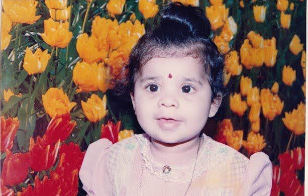
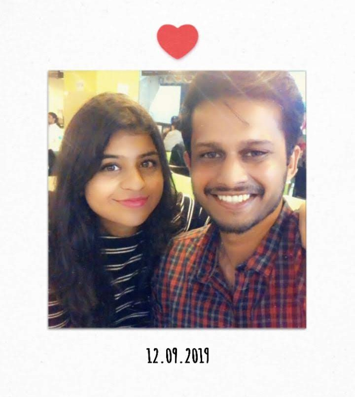
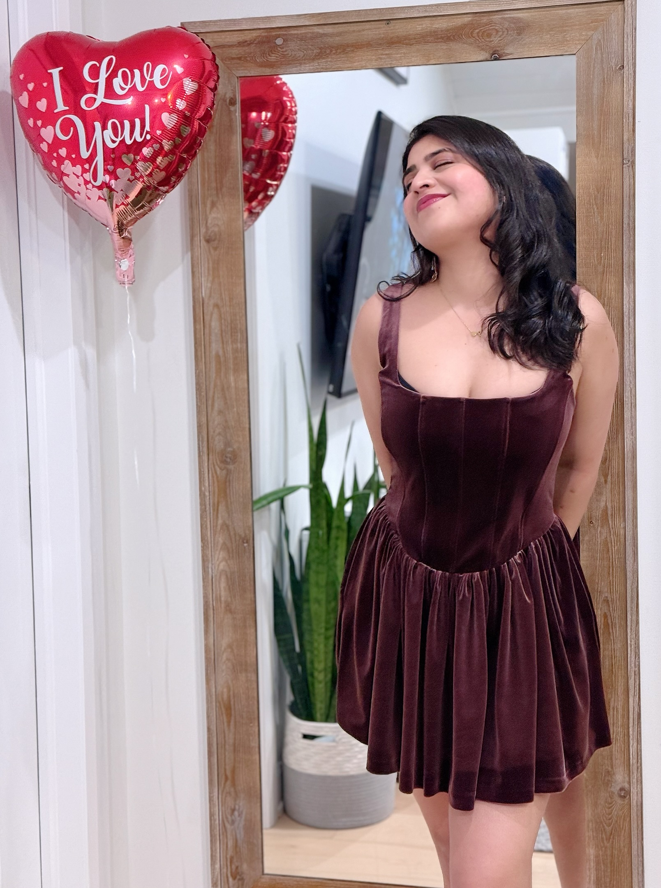

You come across as confident, assertive, fun, and outgoing at first. You definitely give off main-character, life-of-the-party energy . But once people get to know you, they see your kindness, your unconditional love , and how thoughtful you are. In my opinion, anyone who has you as a friend is lucky, because I’ve seen how you go above and beyond to support your friends in every way possible, emotionally and physically.
In a world full of fake people, your most attractive quality is how genuine you are. You make people feel comfortable without even trying too hard. You’re also very non-judgmental, which is such a rare quality these days. As I always say, you’re someone I’ve never felt insecure being around.
I think you’re stronger and more resilient than you realize. You handle more than you give yourself credit for. I also think you’re very smart, intelligent, and talented, and you often underestimate yourself. I personally learn something from you every single day, whether it’s about current affairs, fashion, or something else. And your vocabulary, uff. Since we started dating, there have been so many times I’ve had to open a dictionary to understand some of your words. So thank you for helping me improve my vocab, even if I keep forgetting things, lol.
I remember you sitting at the very first desk, wearing red lipstick, a white top, and green pants when I came to train your batch. My first impression when I saw you was that you looked really good, obviously, no doubt about that. Once we started talking, I saw a really good friend in you, and it felt so easy to be myself around you. It felt like you were someone I’d want to keep getting to know. And clearly, that feeling stayed, because we ended up dating and now we’re married. So you can probably tell that meeting you once was definitely not enough for me.
You’ve taught me how important it is to be intentional about who I give my energy to, and never let anyone overpower me just because they’re older.
I’ve also unlearned a lot of things with your help, which has helped me every single day become a better version of myself.
I Love You!
Seeing you smile at me when you wake up and kiss me while saying, “good morning baby” , instantly makes my day better. The kisses and hugs you give me throughout the day when we’re working from two different rooms calm me down and make my day even better, especially when I’m anxious or stressed dealing with crazy people, hahaha. And I also love that we get to be two weirdos doing weird shit together
You bring the kind of energy that makes a room feel alive. You come in with so much confidence, excitement, and main-character energy that people naturally notice you. You make things feel lighter, louder (no doubt, hehe), and way more fun.
I think you’re naturally really good at starting conversations with anyone, even strangers. I love your confidence when you do that. It’s such an amazing quality, and I really admire it in you.
The first time we kissed is a memory that always makes me smile.

If I had a superpower , I’d relive that night over and over again.
My favorite version of you is the one where you’re fully in your element, bubbly, outgoing, and surrounded by the people and places that make you happiest. I love how your energy lights up a room, and how being outdoors or being with friends brings out the most genuine, joyful part of you.

Not because of the number.
But because of the person you've become.
Thank you for being my favorite hello,
my favorite kiss,
and my favorite person.
Forever your biggest fan,
and always your favorite weirdo ❤️
— Your Hubby Gubby